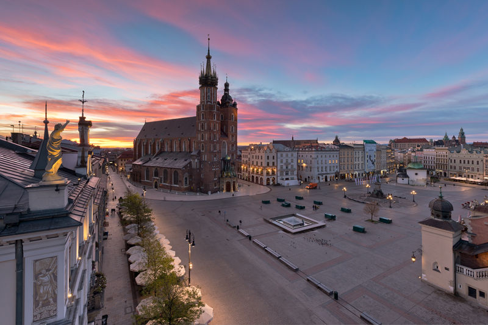
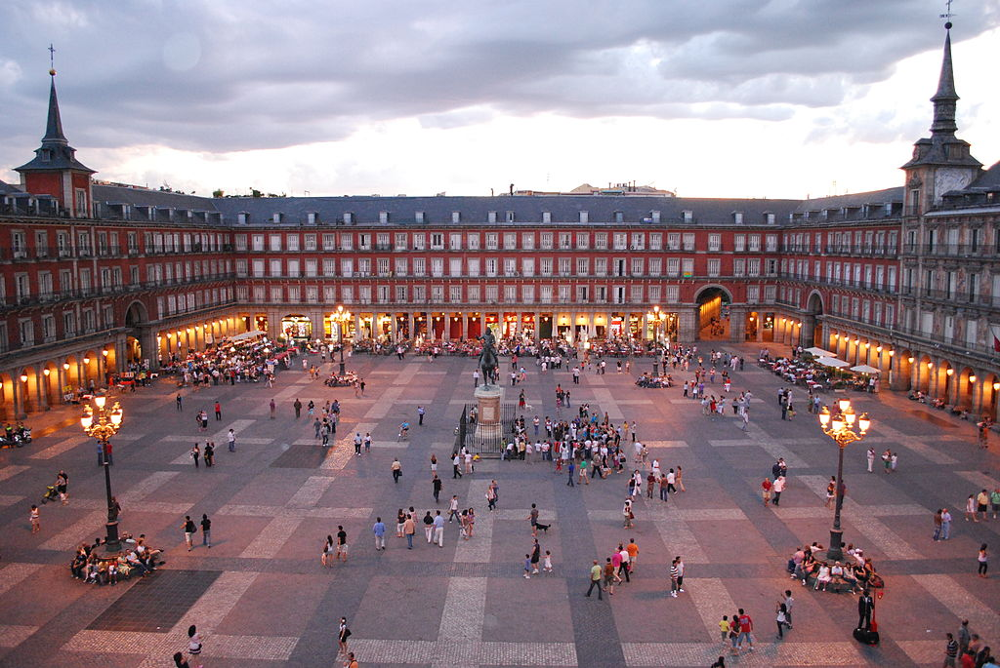

By
Simon Matzinger
-
Own work
,
CC BY-SA 3.0
,
Link

By Paweł Krzan
for
Krakow.pl

By Sebastian Dubiel,
CC BY-SA 3.0 de
,
Link
By
Andrés Nieto Porras
from Palma de Mallorca, España -
61/365²: Opulencia
.
CC BY-SA 2.0
,
Link
...
...
Source:
Wikipedia.
Photo: